CAPÍTULO 2 - Operações com frações
Adição e subtração envolvendo frações
Situação 1
Marina comemorou o seu 10.º aniversário com uma festa. Depois de cantar “Parabéns para você”, a mãe de Marina cortou o bolo em 16 fatias iguais e as distribuiu entre os convidados. Ana comeu 4 fatias; Gilberto 3; Lúcia 1; e Pedro 2.

Representando a quantidade de fatias do bolo que cada um comeu, temos que:
► Ana comeu 4/16 do bolo;
► Gilberto comeu 3/16 do bolo;
► Lúcia comeu 1/16 do bolo;
► Pedro comeu 2/16 do bolo.
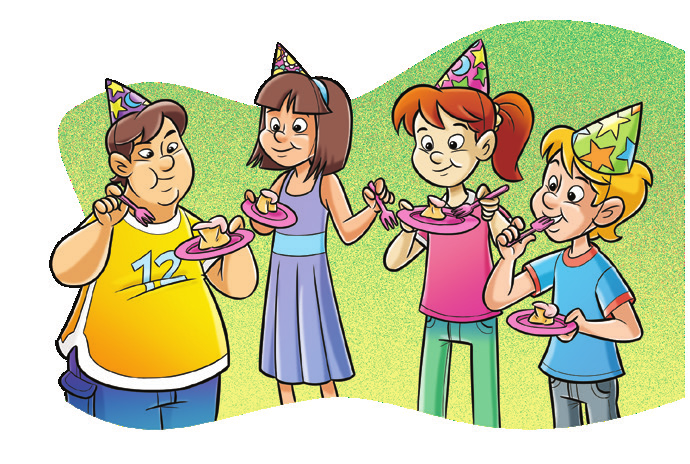UNIDADE 5 - CAPÍTUO 2
177
Qual é a fração que representa a parte do bolo que os meninos comeram juntos?
Para encontrar a resposta dessa pergunta, vamos utilizar um desenho auxiliar representando a situação.
O retângulo abaixo representa o bolo dividido em 16 fatias iguais. Logo, cada fatia corresponde a 1/16 do bolo.
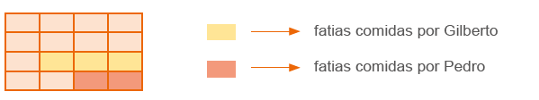Pedro comeu 2 fatias e Gilberto, 3 fatias. Então, das 16 fatias do bolo, os meninos comeram 5.
Podemos representar essa situação por meio da adição de frações. Observe: 2
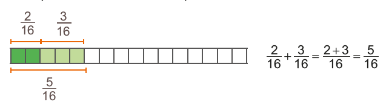
1. Agora, troque ideias com um colega e resolvam, em seus cadernos, as seguintes questões, utilizando a adição de frações.
a) Qual é a fração que representa a parte do bolo que as meninas comeram juntas?
b) Que fração representa a quantidade total de bolo comido por Pedro, Gilberto, Lúcia e Eloísa?
c) As crianças comeram mais da metade do bolo ou menos? Justifique.
Depois que as crianças comeram o bolo, a mãe de Marina guardou-o na geladeira. Que fração representa a quantidade que sobrou do bolo?
Como o bolo foi dividido em 16 fatias e as crianças comeram 10 fatias ao todo, sobraram 6 fatias.
Podemos representar essa situação por meio da subtração de frações.
Como o bolo inteiro equivale a 16/16 e as crianças comeram 10/10 , temos: 16
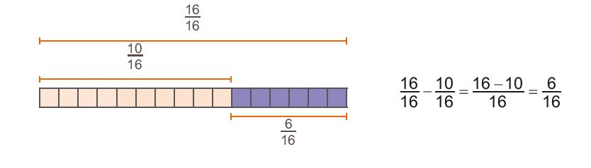178
UNIDADE 5 - CAPÍTULO 2
2. Agora, resolvam em seus cadernos, as questões a seguir.
a) Que fração representa a quantidade de fatias que Pedro comeu a mais que Lúcia?
b) Que fração representa a diferença entre a quantidade total de fatias que os meninos comeram e a quantidade total de fatias comidas pelas meninas?
Na adição e subtração de frações com o mesmo denominador, conservamos o denominador e adicionamos ou subtraímos o numerador.
Situação 2
Para realizar um trabalho escolar, Marcela e Bruna deverão entrevistar todos os professores da escola. Marcela já entrevistou 3/5 dos professores e Bruna entrevistou 3/10 deles. Que fração representa a quantidade total de professores que elas entrevistaram?

Para resolver essa situação, é preciso adicionar as duas frações, que têm denominadores diferentes. Para isso, devemos encontrar frações equivalentes às frações dadas, de modo que elas apresentem o mesmo denominador. Observe:
![Três barras na horizontal de mesmo tamanho. Duas à esquerda e uma à direita. As da esquerda estão um embaixo da outra. A de cima está dividida em cinco retângulos. Os dois primeiros são azuis-claros. O terceiro é azul escuro e os outros dois brancos. Abaixo da barra, nos retângulos azuis, a fração 3/5. A barra abaixo, está dividida em 10 quadrados. Os quatro primeiros são azuis-claros. O quinto e sexto, azuis-escuros. Os últimos cinco são brancos. Abaixo da barra, na região, dos quadrados azuis, a fração 6/10. Entre as duas barras, um tracejado inicia e termina, na região com as cores azuis, sendo os 3/5 do mesmo tamanho que os 6/10. Na barra de cima, os dois primeiros retângulos na cor azul clara têm o mesmo tamanho dos quatro quadrados azuis-claros, da barra de baixo. Assim como, o terceiro retângulo azul escuro da barra de cima tem o mesmo tamanho dos quadrados azuis-escuros da segunda barra. Na terceira barra à direita, ela está dividida em dez quadrados. Os primeiros quatro quadrados estão em azul claro, o quinto e o sexto são azuis-escuros. O sétimo, oitavo e nono estão nas cores laranja e o décimo quadrado é branco. Acima dos quadrados azuis, a fração 6/10. Acima dos quadrados em laranja, a fração 3/10.](../../resources/images/fraqequi.PNG)
Marcela e Bruna entrevistaram 9/10 do total de professores.
UNIDADE 5 - CAPÍTULO 2
179
Marcela entrevistou mais professores que Bruna. Qual é a fração que representa a quantidade de professores que Marcela entrevistou a mais?
Para saber a fração que representa essa situação podemos realizar uma subtração. Da mesma forma que na adição, para realizar a subtração há a ne-cessidade de encontrar frações equivalentes que apresentem o mesmo denominador. Observe:
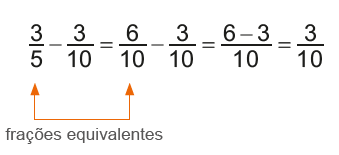Logo, Marcela entrevistou 3/10 a mais da quantidade total de professores que Bruna.
Na adição e subtração de frações com denominadores diferentes, devemos encontrar frações equivalentes às frações dadas, ou seja, que apresentem o mesmo denominador, para então adicionarmos ou subtrairmos as frações.
Outros exemplos:
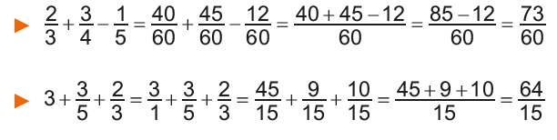ENCONTRE SOLUÇÕES
1. Roberto estava com o tanque do carro vazio. Ao parar no posto, ele abasteceu o carro, que é bicombustível, com 3/5 de etanol e 1/5 de gasolina. Em seu caderno, escreva a fração que representa:
a) a quantidade a mais de etanol que Roberto colocou no tanque, se comparado à quantidade de gasolina;
b) a quantidade total de combustível colocado no tanque do carro;
c) a quantidade de combustível que faltou para completar o tanque.
2. Qual é a fração que representa a parte vermelha da figura abaixo?
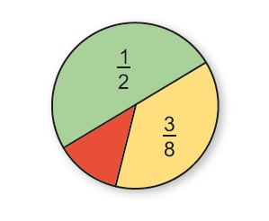180
UNIDADE 5 - CAPÍTULO 2
3. Em seu caderno, calcule as operações a seguir, simplificando o resultado quando for possível.
a) 5/3 + 2/3 + 11/3
b) 11/13 + 12/13 - 8/13
c) 5/10 + 3/10 + 6/10 - 7/10
d) 19/9 - 12/9 + 2/9
e) 7/8 + 3/8 + 6/8 + 11/8 - 9/8
f) 4/5 - 3/5 + 8/5 + 7/5 - 6/5
4. Observe as figuras a seguir.
 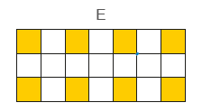
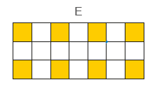
a) Em seu caderno, represente, na forma de número fracionário, a parte colorida de cada figura.
b) Usando as frações que você encontrou da parte colorida de cada desenho, represente as expressões e calcule:
► A + B - C
► D - E
c) Em seu caderno, represente os resultados das expressões por meio de desenhos.
5. Em seu caderno, calcule as operações, simplificando o resultado quando for possível.
a) 3/4 + 2/5
b) 6/7 - 2/3
c) 4/3 + 5/6 + 1/2
d) 3/2 - 1/3 - 2/5
e) 5/4 + 1/8 - 2/7
f) 7 - 2/5 + 3/10 - 3/2 + 12/20
6. Numa maratona, Ademar percorreu 5/9 do percurso na primeira meia hora e 2/5 na meia hora seguinte.
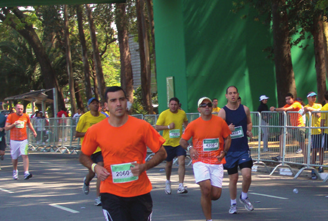a) Ademar percorreu a maior distância na primeira ou na segunda meia hora?
b) Que fração representa o total percorrido por Ademar durante a primeira hora de corrida?
c) Nesse momento, que fração da maratona ainda restava para Ademar percorrer?
UNIDADE 5 - CAPÍTULO 2
181
7. Elvira recebeu seus netos Eduardo, Leonardo e Gabriel, para passarem uma tarde em sua casa. Depois de brincarem no quintal, os meninos foram para a cozinha lanchar. Elvira fez biscoitos para eles. Eduardo comeu dois quartos dos biscoitos, e Leonardo um doze avos. Sendo assim, responda:
a) Que fração representa a quantidade de biscoitos que sobrou para Gabriel?
b) Qual dos netos comeu mais biscoitos?
c) Que fração representa a diferença entre a quantidade de biscoitos que Leonardo comeu e a quantidade comida por Gabriel?
8. Foi feita uma pesquisa com os alunos do 6.º ano de uma escola sobre o gênero de filme preferido. Cada aluno poderia escolher somente um gênero: animação, aventura, comédia ou suspense. Os resultados foram organizados no gráfico de setores abaixo. Analise- o e responda às questões.
Gênero preferido
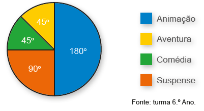a) De acordo com o gráfico, escreva a fração que corresponde à quantidade de alunos por gênero de filme.
b) Qual é a fração que representa a quantidade de alunos que preferem animação ou comédia?
c) A fração que corresponde à quantidade de alunos que preferem comédia é equivalente à fração que corresponde à quantidade de alunos que preferem outro gênero. Qual gênero é esse?
d) Qual fração representa a quantidade total de alunos que preferem animação, aventura e suspense?
e) Qual fração representa a diferença entre os gêneros animação e suspense?
9. As etapas para a construção de uma casa são três: projetos, execução dos projetos e acabamento. Do tempo gasto para a construção, 1/5 foi empregado para fazer os projetos e 4/15 representam o tempo gasto para executá-los. Qual fração do tempo gasto na construção representa o tempo empregado para fazer o acabamento dessa casa?
10. Joana propôs um desafio para Lucas: solicitou que ele resolvesse a seguinte operação:
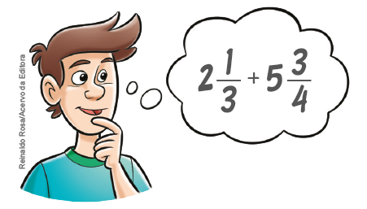Observe como Lucas resolveu:
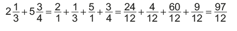► Agora é com você! Resolva, em seu caderno, as operações a seguir.
a) 3.1/2 + 1/3
b) 4.1/5 - 1.2/7
182
UNIDADE 5 - CAPÍTULO 2
11. Em seu caderno, resolva as expressões, simplificando o resultado quando possível.
a) 4/5 - (1/3 + 1/2)
b) (1/2 - 1/3) + (5/6 - 3/4)
c) 3 - (5/4 + 2/5)
d) 5/6 - (2/3 - 1/2) - 9/10
12. O salário de Joana é de 870 reais. No mês passado, ela gastou 1/5 com o aluguel, 1/3 com alimentação e 2/5 com outras despesas. Quantos reais sobraram do salário de Joana?
13. Marina está lendo um livro de aventuras. No primeiro dia, ela leu 2/5 do livro. No segundo dia, ela leu 3/7 do livro. Qual é a fração que representa a quantidade de páginas que ainda faltam para Marina ler?
14. Durante o almoço tomei a metade da garrafa de suco e, no jantar, tomei a metade do que havia restado. Qual é a fração que representada a quantidade de suco que ainda resta na garrafa?
15. Em seu caderno, elabore um problema sobre adição ou subtração de frações. Troque seu caderno com um colega e peça a ele para resolver o problema elaborado por você. Após a resolução, converse com ele sobre a resolução e utilize desenhos caso ache necessário.
16. Observe as imagens das pizzas a seguir. Elas foram cortadas em partes iguais.
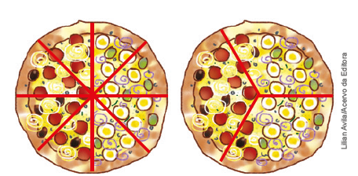► Em seu caderno, elabore um problema sobre adição de frações usando as imagens acima como referência. Em seguida, troque seu caderno com um colega para que ele resolva o problema elaborado por você. Juntos, verifiquem se os problemas resolvidos estão corretos.
17. (OBMEP) Uma turma fez uma eleição para eleger seu representante. Três candidatos concorreram à eleição: João, Rosa e Marcos. João teve 2/7 dos votos, Rosa teve 3/5 dos votos. Quem ganhou a eleição?

18. (OBMEP) A capacidade do tanque de gasolina do carro de João é de 50 litros. As figuras mostram o medidor de gasolina do carro no momento de partida e no momento de chegada de uma viagem feita por João. Quantos litros de gasolina João gastou nesta viagem?
a) 10
b) 15
c) 18
d) 25
e) 30
UNIDADE 5 - CAPÍTULO 2
183
Multiplicação de um número natural por uma fração
Neste ano, o projeto da escola onde Paulo estuda é sobre a conscientização da importância da reciclagem. Foi feita, então, uma campanha para arrecadar o maior número possível de latas de refrigerante e sucos vazias. Para incentivar a campanha, a escola premiará a turma que arrecadar mais latas. O 6.º ano A, turma do Paulo, ficou em 2º lugar por ter arrecadado 2/7 do total. O 6º ano C foi o grande campeão, arrecadando o dobro da quantidade arrecadada pela turma de Paulo.
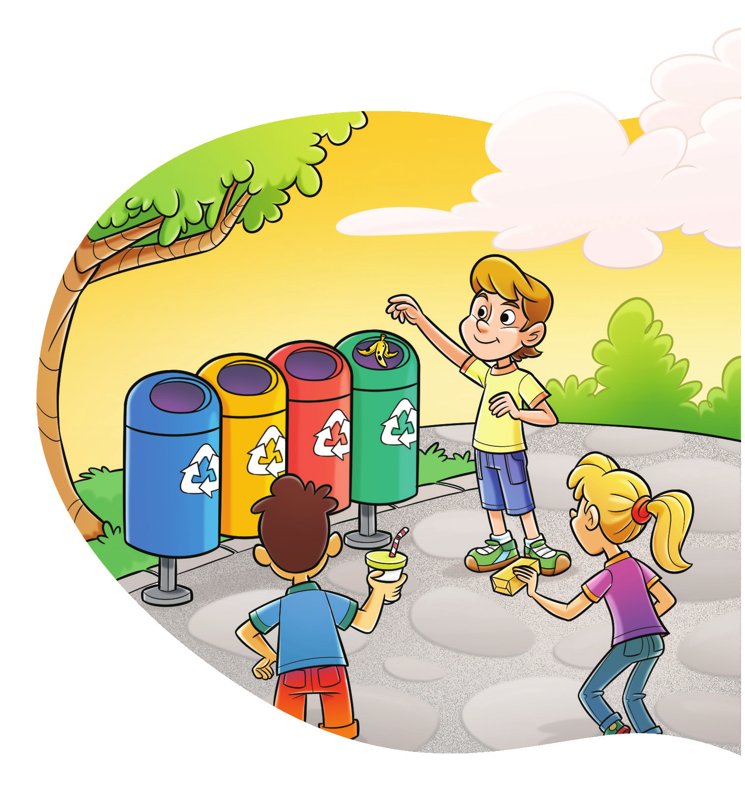Qual é a fração que representa a quantidade arrecadada pelo 6º ano C?
Vamos verificar a solução dessa situação!
Sabemos que, para determinar o dobro de uma quantidade, podemos multiplicá-la por 2, ou seja, 2 ∙ 2/7. Como uma das ideias da multiplicação é a adição de parcelas iguais, temos:
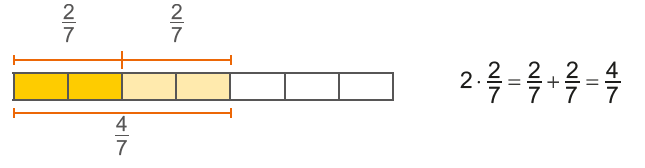Observe outra maneira de efetuar a multiplicação: 2.2/7 = 2/1.2/7 = 2.2/1.7 = 4/7
Logo, o 6.º ano C coletou 4/7 do total de latas arrecadadas pela escola.
Na multiplicação de um número natural por uma fração, multiplicamos o número natural pelo numerador da fração, conservando o mesmo denominador.
184
UNIDADE 5 - CAPÍTULO 2
Multiplicação entre frações
O 6º ano B foi a turma que menos arrecadou latinhas. A quantidade arrecadada foi 1/4 da quantidade do 6º ano C. Qual é a fração que representa a quantidade de latas arrecadadas pelo 6.º ano B?
Vamos verificar a solução dessa situação!
Representando na forma de desenho, temos:
Esse desenho representa 7 das latas.
Esse desenho representa 4/7 das latas.
A parte hachurada representa 1/4 de 4/7.
Analisando toda a figura, a parte hachurada representa 1/7 de toda a figura. Calcular 1/4 de 4/7 é o mesmo que:
1/4.4/7 = 14/4.7 = 4/28 = 1/7
Logo, o 6º ano B arrecadou 1/7 do total de latas.
Na multiplicação entre duas ou mais frações, multiplicamos o numerador de uma fração pelo numerador da outra, e o denominador de uma pelo denominador da outra.
Técnica do cancelamento
Observe as seguintes multiplicações:
2/6 . 3/4 = 6/20 = 3/10
Neste caso, a multiplicação foi efetuada e, depois, o produto foi simplificado.
Usando a técnica do cancelamento.
Nessa multiplicação, foi usada a técnica do cancelamento. O numerador 2 e o denominador 4 são múltiplos de 2. Foram, então, simplificados por 2 antes de a multiplicação ser efetuada. Assim, o resultado já fica simplificado.
A técnica do cancelamento consiste em simplificar numeradores e denominadores que são múltiplos de um mesmo número, quando possível, antes de efetuar a multiplicação.
Outro exemplo:
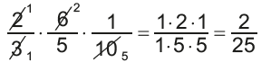UNIDADE 5 - CAPÍTULO 2
185
ENCONTRE SOLUÇÕES
1. Luciana adora cozinhar. Para receber suas amigas, ela pensou em fazer uma torta salgada. Veja a receita a seguir.
Torta salgada
Ingredientes
3 ovos
3/2 xícaras de farinha
1/2 xícara de óleo
1/2 xícara de leite
1 colher de chá de fermento
Sal a gosto
150 gramas de presunto picado
150 gramas de queijo picado
2 tomates temperados com cheiro verde, sal e óleo.
Modo de fazer
- Bata no liquidificador o leite, a farinha, o óleo, os ovos e o fermento.
- Deposite este creme em um tigela e misture os demais ingredientes.
- Adicione tudo em um fôrma. Leve ao forno por, pelo menos, 40 min, a uma temperatura de 180ºC.
► Uma receita rende o suficiente para 4 pessoas. Como Luciana receberá 12 amigas, quantas receitas ela deverá fazer? Em seu caderno, escreva a quantidade de ingredientes que ela utilizará para fazer a torta.
2. Em seu caderno, efetue as multiplicações, simplificando-as sempre que possível.
a) 2/3 . 5
b) 4/9 . 18
c) 7/13 . 13
d) 11/25 . 5
e) 12 . 1/12
f) 11 . 2/22
g) 8 . 5/3
h) 124 . 3/62
3. No 6.º ano A, 3/5 dos alunos são meninos. Desses meninos, 1/4 joga futebol. Qual é a fração que representa a quantidade de alunos do 6.º ano A que jogam futebol?
4. Durante o mês de dezembro, uma concessionária vendeu 125 carros. Destes, 3/5 tinham ar-condicionado. Quantos carros com ar-condicionado foram vendidos nesse mês?
5. Gabriela e Bruna resolveram colaborar com a associação de idosos no bairro onde moram. Cada uma recebeu um bloco contendo 20 rifas para vender durante a semana. Gabriela vendeu 3/4 do seu bloco e Bruna 4/5. Quantas rifas Gabriela e Bruna venderam juntas?
6. Efetue as multiplicações, simplificando- as sempre que possível.
a) 2/3 . 4/7
b) 3/2 . 4/5
c) 2/5 . 10/6
d) 120/7 . 49/12
e) 1/2 . 4/3 . 5/7
f) 5/4 . 4/3 . 1/3
g) 15/4 . 3/5 . 8/9
h) 3/8 . 6 . 16/9 . 5/12
7. Em uma longa viagem, 5/6 foram percorridos utilizando-se dois tipos de veículos auto1/3 desse percurso foi feito de ônibus, qual é a fração da viagem que representa o trecho feito de automóvel?
186
UNIDADE 5 - CAPÍTULO 2
8. Em seu caderno, calcule e, sempre que possível, simplifique o resultado.
a)
b)
c)
d)
UNIDADE 5 - CAPÍTULO 2
187

Divisão envolvendo frações
Situação 1
A turma de Carlos se reuniu para brincar. Sua mãe, então, resolveu comprar 2 garrafas de suco para servi-los. Estimando que cada um tomará 23 da garrafa e não sobrará nada nesse recipiente, quantas pessoas há nessa turma?
Se verificarmos quantas vezes 23 cabe em 2, descobriremos a quantidade de pessoas.
Representando a situação na forma de desenho, temos: 2
23 “cabem” 3 vezes em 2 garrafas
2
1
1
2
3
3
3
3
23
Assim, 2 2
: = 3
3
.
Note que o quociente pode ser encontrado multiplicando-se o primeiro número pelo inverso do segundo.
2 2
: = 2 3 6
⋅ = = 3
3
2 2
Perceba que obtivemos o mesmo resultado ao multiplicar 2 pelo inverso de 23 .
Logo, são 3 pessoas que fazem parte da turma.
Situação 2
Para o lanche, a mãe de Carlos comprou 12 de um bolo de chocolate para repartir, igualmente, entre todos eles de modo que não sobrasse nada. Qual é a fração que representa a parte que cada um comeu do bolo inteiro?
188
UNIDADE 5 - CAPÍTULO 2

Representando a situação por meio de desenhos, temos: 1
Parte do bolo comprado pela mãe.
2
1 : 3
2
Metade do bolo dividido pelos 3 colegas.
1
Parte que cada um comeu.
6
Logo, temos que:
1 : 3 1
=
2
6
Vamos agora multiplicar 12 pelo inverso de 3.
1 : 3 1 1 1
=
⋅
=
2
2 3
6
Perceba que tivemos o mesmo resultado ao multiplicar 12 pelo inverso de 3.
Na divisão de duas frações, multiplicamos a primeira fração pelo inverso da segunda fração.
Observe, agora, a seguinte situação:
2
2 1
:
3
3 9
19
1
2
9 "cabe" 6 vezes em 3
Logo, 2 1
: = 6
3 9
.
Podemos efetuar essa operação da seguinte maneira: 2 1 2 9 18
: = ⋅ =
= 6
3 9 3 1
3
inverso
UNIDADE 5 - CAPÍTULO 2
UNIDADE 5 - CAPÍTULO 2
189


Uma fração também representa uma divisão entre o numerador e o denominador. Observe algumas formas de representar a divisão: 4
► 15 = 15 : 5
3 4 1
= :
5
► 7 : 3 7
= 3
► 1 3 7
7
ENCONTRE SOLUÇÕES
1. Em seu caderno, determine o inverso 7. Em seu caderno, calcule as divisões, de cada número abaixo.
simplificando o resultado sempre que a) 5
c) 1
e) 9
possível.
4
13
a) 3 : 3
e) 1 : 1
2 4
b) 8
d) 12
f) 1
5 2
1
7
17
b) 6
: 1
: 12
f) 4 2
2. Qual é o número que, multiplicado por 7 14
13
c) 12 : 6
g) 1 : 1
19 , resulta em 1?
5 15
3 5
3. Em seu caderno, calcule as seguin-d) 12 : 12
h) 14 : 21
tes divisões, simplificando o resultado 13 13
18 6
quando possível.
8. Em seu caderno, calcule e, sempre a)
que possível, simplifique as expres-3 : 2
d) 1: 4
g) 15 :15
6
5
17
sões numéricas.
b) 12 : 24
e) 0 : 12
h) 10 :1
a) 2
4 1
+ :
d) 3 12 1 1
⋅
+ :
7
13
7
15 5 3
4 9
2 3
c) 5 : 1
f) 4 : 8
5 10 1
1
7
4
9
b) 1 1 + :
−
+
( ):
10 2 16 4 e) 15 2 10
4. Três pessoas comeram a metade de um melão. Qual é a fração que representa c)
1 2 f) 3 2 1 3
⋅
:
+
( )
a quantidade que cada um comeu do
7 1
−
( ): +
( )
3
4 3
5 4 2
melão?
9. Ana Carla comprou uma garrafa de 20 L
5. Márcia fez 8 litros de suco de laranja e de água. Ela irá encher garrafinhas de pretende colocá-los em garrafas de 1 de 4
1
água que cabem
litro. De quantas garrafas ela precisará?
2 de litro. Quantas
garrafinhas de água Ana Carla conse-
6. Alguns amigos resolveram viajar pelo guirá encher?
Brasil. Viajando de carro, eles já percor-10. Lucas comprou 2 quilogramas de açú-reram 3 do trajeto total e, para não ficar 5
car e deverá colocar em potes que ca-
cansativo, cada um dirigiu um pouco.
bem 1
Sabendo que cada um dirigiu 1 do per-4 de quilograma cada um. Quan-
5
tos potes de açúcar ele conseguirá
curso, quantos amigos estão viajando?
encher?
190
UNIDADE 5 - CAPÍTULO 2